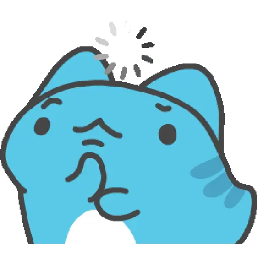
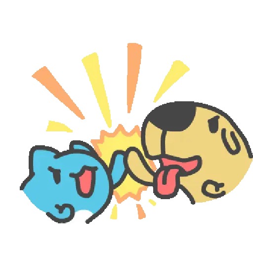
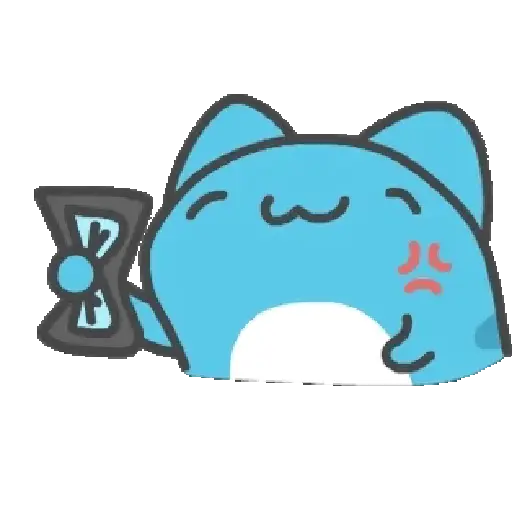

ketuk kadonya, yuk

coba tebak kodenya
petunjuk

hai!
udah siap buka kejutannya?

yaah, padahal udah aku siapin
today, you turn
16
happy birthday!!
happy birthday
Pesan hangat ada di sini.
okayy last one...
lagu-lagu buat kamu
selamat ulang tahun ya
tarik amplopnya ke atas